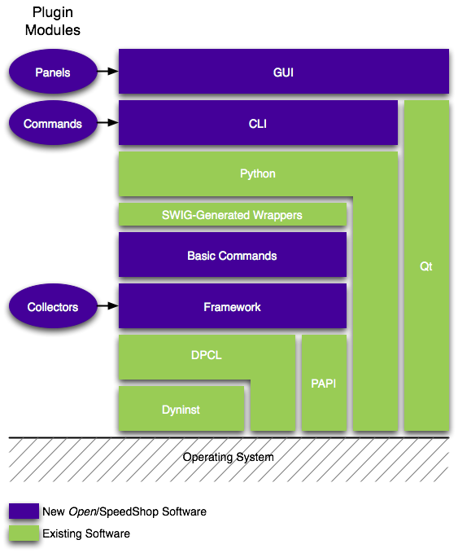

General
Open/SpeedShop
is a
project to provide open source performance analysis tools for a wide
range of platforms. One of the requirements of the Open/SpeedShop
project is that Open/SpeedShop support clustering. The project is
designed in such a way as to enable value-added plugins for the open
source version. These value-added plugins can be the pre-canned
performance analysis experiments, which contain the experiment specific
collector and the corresponding command line interface and GUI support
software. There are separate plugins for the collector, command
line interface, and GUI software components. Plugins can also be
written for advanced/enhanced versions of experiment collectors,
command line interface and GUI analysis tools. These plugins allow the
Open/SpeedShop performance tool to be enhanced by the open source
community.

The diagram above lists both the existing open source and university
software as well as the software being developed from scratch by SGI
under the ASC PathForward procurement. The software components
in the diagram above are arranged in such a way as to show their
dependence and interaction with each other. For example, the
Framework component uses the DPCL API to interact with the DPCL
component. The Framework also interacts with the PAPI component through
the PAPI
API. So, one can determine component relationships by
viewing the diagram. The plugins (GUI panel, CLI, and Collector)
together define a performance measurement experiment
definition. This definition along with the applications it
will be run against create an instance of a performance experiment.
Dyninst and DPCL
Dyninst (http://www.dyninst.org/) and DPCL (http://oss.software.ibm.com/developerworks/opensource/dpcl/) are key elements
of the design. DPCL is the component in satisfying the
clustering requirement. Dyninst allows the Open/SpeedShop
performance tool to instrument executables to obtain timings and also
allows the Open/SpeedShop performance tool to attach to running
processes.
In a clustering
configuration DPCL uses a client/server architecture where a DPCL
"super daemon" is created each time the user starts a performance
tool. This super daemon is responsible for insuring that a
"communication daemon" is running on each of the machines in the
cluster. The super daemon distributes commands from the performance
tool
to the various communication daemons and gathers data from them. TCP/IP
is the transport mechanism for this data in DPCL. Dyninst is used to
adding timing, counts, or other types of data gathering code to an
application. Dyninst also intercepts systems calls such as fork() and
exec() as well as dlopen() calls. This is needed by the tools to follow
forking processes and to properly handle executables with shared
objects. Dyninst also provides a certain amount of symbol table lookup
ability. It supports queries such as "What is the function at address
XYZ?"
Framework
On top of these
components, an infrastructure that supports plugins (collectors, CLI
and GUI support) is built. Collectors are data collection
components that interface with the Open/SpeedShop infrastructure and
the operating system in order to gather one specific type of
performance data. They pass this data to the Open/SpeedShop framework
runtime which then forwards it via the transport mechanisms discussed
above to an analysis tool (or disk file). In the data analysis, the
Open/SpeedShop analysis tools plugins would also be needed to analyze
the performance data that was produced by the collector and produce a
meaningful view of the data. For example, a MPI experiment might
have its own collector that was designed to gather, say, the amount of
time spent in each MPI call. It is a plugin, so it would not share code
(other than the runtime's API) with any other collector. There would
also need to be a corresponding plugin for the data analysis tool
(command line or GUI) that knew how to process the gathered data into a
meaningful view for the user. By separating the data
gathering/collection plugins from the rest of the Open/SpeedShop
infrastructure, we gain additional flexibility.
The design
include the concept of performance data streaming, in that the live
data could be viewed on a display as it was gathered. Of course this
requires that the data is processed by the internal routines (analysis
plugins) prior to display to the display screen. There would also be
options to save the streamed data for post analysis. The ability to
change the experiment being run from the GUI interface in "real time"
gives the user the ability to do some analysis and then react to the
results and do further analysis without re-running the application.
This is the advantage of dynamic instrumentation and a reason to use an
instrumentation package such as Dyninst.
For more information and for pointers into the Framework design see:
Framework specific design documentation.
PAPI
PAPI (http://icl.cs.utk.edu/projects/papi/) is a tool that is
used as the Open/SpeedShop performance tools interface with the
hardware counters (HWC). PAPI has been evolving over the years from
it's start as a Ptools (www.ptools.org) consortium
sponsored project.
Graphical User Interface - GUI
The graphical
user interface (GUI) code is written using the Qt tool kit.
The goal of the GUI is to provide an intuitive, easy to use, portal to
an otherwise complex and overwhelming application. In the case
of this design we
are attempting to put an intuitive interface between the user and their
applications performance experiment. It's a layer that will help
the user ask the correct questions and get the correct meaningful
answer back regarding, "Where is my application spending all its time
and how can I make it go faster."
One objective to this goal is to provide a GUI framework that will
provide common consistent base functionality. One that will
prevent a complex set of tools from getting window-itis, yet providing
the user with all the necessary control and clues/hints to achieve
their end goal. The GUI base will also provide the
necessary flexibility to add new functionality as other developers
begin to develop add-ons (plugins) to improve the core set of tools
provided.
The GUI is broken into four basic parts. MainWindow, panel
containers,
panels, and api. MainWindow will handle parsing command line
arguments and initializing plugins. The panel containers provide all
the
underlying metaphors for screen layout, menu management,
dive functionality, drag-n-drop, communication broker, and a high level
toolbar.
The panels are responsible for individual functionality relating to an
individual performance experiment, source display, file
management/lookup, and
other encapsulated functionality. The panel container functionality is
responsible for handling communication between the individual
panels and the framework (when framework functionality is
required). The API will be responsible for interfacing the GUI to
the framework.
The four GUI base components are as follows:
- MainWindow - This is where the GUI starts.
It's responsible for the tool
initialization, including splash screen, initial menu bar, loading of
initial
panel container components, initial panel components, query of plugin
layout and
adaptation depending on what plugin components are available.
There can be only one MainWindow.
- Panel Containers - A panel container is an area (container) on
the screen where panels can be placed and managed.
A panel container can be split either
horizontally or vertically into 2 panel containers. A panel container
can contain, one, many, or no panels. A panel container has no specific
knowledge
of what a panel is doing. (i.e. It doesn't know anything
about experiments. It just manages the panels space and any
communication
with other panels.)
Each panel container will have a simple
communication broker to allow panels to communicate.
A panel container is responsible for interacting with the user, via the
panel container menu, to add, delete, resize, or move panels.
- Panels - A panel is where all the nuts-n-bolts knowledge and
logic exists for an individual task.
It will handle panel specific user
interaction
and interaction with the Framework.
A Panel is placed in a panel container. Each panel is managed by the
parent panel container. A Panel is the base handle for all views. That
is each user defined panel (i.e. performance experiment type) will
have a panel type derived from a base class panel. Examples of panel
types and their functions would be:
- Wizard Panel: The Wizard Panel would be responsible for
interviewing the user to aid them in selecting the right performance
tool for the job. After the interview process was completed an
execute experiment command would be passed to the Framework for action.
Upon completion the user would be notified and an appropriate
(default) report (Experiment Panel) would be generated for the user.
- User Time Panel:
- MPI Experiment Panel:
- Call Graph Panel:
- Source Panel
- ...
Panels will look like a "tabbed" view.
A panel can be moved around to be placed near other panels for
association (communication) to be granted. An example of this could be
a User Time Panel could be placed near and existing Source Panel, so
when the user clicks on an object in the User Time Panel that relates
to a source line, the nearest Source Panel would be updated
(repositioned) to that source line.
Panels will be loaded as plugins. It will be the
MainWindow's responsibility to locate and configure the GUI to interact
with whatever plugins are currently located on the system. The
MainWindow's menus will need to be dynamically configured based on the
available plugins. A plugin directory (directories) will exist
with plugin definitions and related dynamic libraries to be loaded.
The dynamic libraries may be loaded initially, or later (on
demand), depending on their type. Using plugin technology allows
for ease of extending this tool in
the future. It also will keep this tool very lightweight as only
the functionality requested needs to be loaded.
For more information and for pointers into the GUI design see:
GUI Overview
Command Line Interface - CLI
The interactive command line (CLI) tool also uses a similar (to the
GUI) plugin facility to define it's experiment specific
functionality. It will be the CLI's main component's
responsibility to locate and configure the CLI to interact
with whatever plugins are currently located on the system.
There will be scripting functionality built into the CLI tool. We
are currently investigating the use of Python as the scripting
language. Open/SpeedShop commands will be built into
Python. These commands will allow the creation of a performance
measurement experiment, the ability to control the experiment enabled
target application and the ability to view the performance measurement
output values.
The
CLI tool is still being designed and this space will be updated in
future releases with the appropriate design information.
Bproc Support
Open/SpeedShop will function on Open/SpeedShop supported Linux systems
that are running the
Bproc (Beowulf
Distributed Process Space) kernel modifications. The Dyninst
component is the where the Open/SpeedShop tool interfaces with the
Bproc functionality. Support for clusters using a single system
image (the BProc model) shall be provided. The design is to run a
single DPCL daemon on the host that is running the tool and to allow
Dyninst to directly manipulate the remote processes by using the
BProc-provided debugging interface. SGI has already prototyped this
option. Dyninst was found, with minor modifications, to be capable of
manipulating remote processes in a BProc-based cluster. This
section will be updated with the final design information after further
research into the best method of support for Bproc.
There are several API's defined in the Open/SpeedShop product.
First a bullet list is provided, then the sections that follow will
provide more detail as to the reasons for each API's
existence. The major API's in Open/SpeedShop are as follows:
- API between the Open/SpeedShop Framework component and DPCL
- API between the Open/SpeedShop Framework component and the
Experiment Collectors
- API between the Open/SpeedShop Framework component and the
GUI/CLI tools
- API between the Open/SpeedShop Framework component and PAPI
- API between the DPCL and Dyninst components
API between the Open/SpeedShop Framework component and DPCL
The API between the Open/SpeedShop Framework component and DPCL is the
standard DPCL API defined by the
DPCL Class
Reference document. Open/SpeedShop uses this previously
defined API to support clustering performance measurement collection
and analysis. The use of this API is driven by requests from the
API between the Framework component and the GUI/CLI tools.
API between the Open/SpeedShop Framework component and the
Experiment Collectors
The API between the Open/SpeedShop Framework component and the specific
experiment collector modules is the API that allows the experiment
developer to create a collector. This collector module will
gather performance data from the application by specifying a metric or
metrics to be collected. If you are writing
a new performance data collector plugin, start with the page
Collector Plugin API.
API between the Open/SpeedShop Framework component and the
GUI/CLI tools
The API between the Open/SpeedShop Framework component and the GUI/CLI
tools is called the Performance Tool API. It is the API that
allows the tool developer to control the application execution, enable
and disable performance data collection, create thread groups, and
other tasks related to controlling the gathering and execution of the
application or applications. If you are writing
an application performance tool that will use the
framework, the best place to start is with the page
Performance Tool API.
API between the Open/SpeedShop Framework component and PAPI
The API between the Open/SpeedShop Framework component and PAPI .......
API between the DPCL and Dyninst components
The API between the DPCL and Dyninst components is the standard Dyninst
API defined by the
Dyninst
API document.